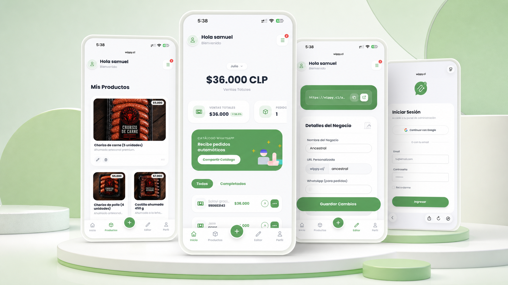
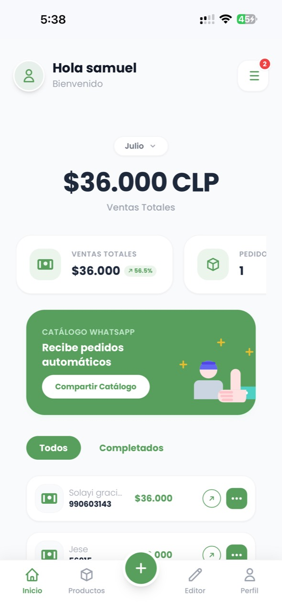
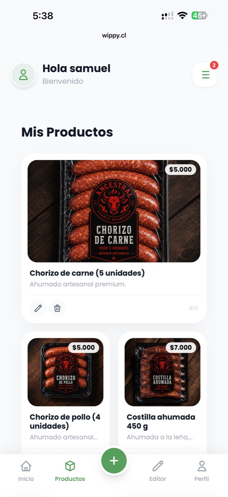
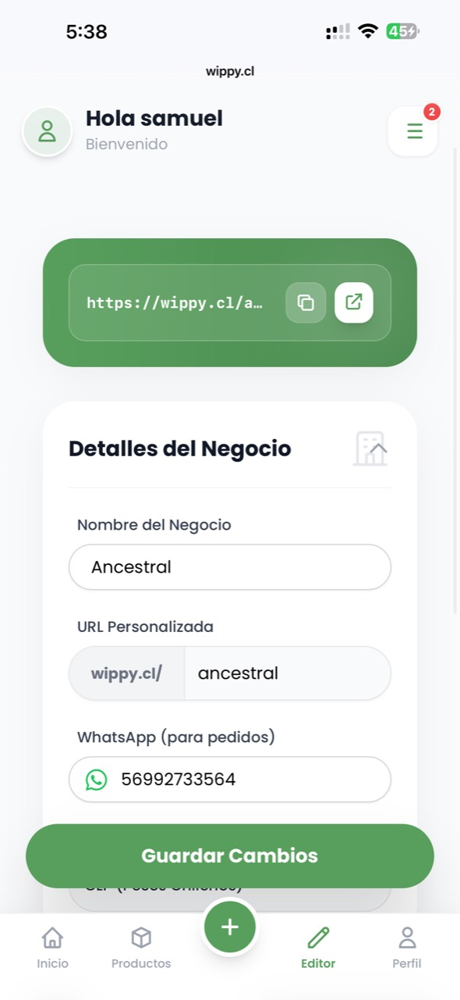
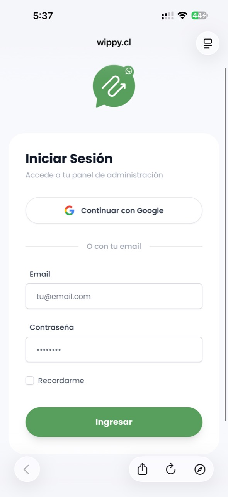

Plataforma SaaS que permite a pequeños negocios crear catálogos digitales, gestionar productos y recibir pedidos estructurados mediante WhatsApp.
Participación adicional: definición del MVP e implementación en Laravel.

Pequeños comercios y emprendimientos que vendían mediante redes sociales y WhatsApp sufrían una gran pérdida de tiempo enviando fotos individuales, listas de precios desactualizadas y gestionando pedidos en chats desordenados sin un inventario estructurado.
Los negocios necesitaban una herramienta rápida para mostrar su catálogo sin obligar al comprador final a descargar aplicaciones ni crear cuentas, canalizando las órdenes directamente al WhatsApp del comercio de forma estructurada.
Selección de las funciones esenciales para crear un catálogo usable y generar un mensaje estructurado directo al WhatsApp del negocio.
Navegación Mobile First para exploración de productos, selección de variantes y adición al carrito en dos toques.
Gestión de inventario, stock y enlaces de catálogo en una interfaz limpia y simplificada.
Formateo automático del pedido con ítems, cantidades y total para envío instantáneo a WhatsApp.
Sistema de Componentes: Creación de tarjetas de producto, modals de detalle, contadores de carrito y botones responsivos reutilizables en Figma.
Participación en Implementación: Como complemento al trabajo de Product Design, desarrollé el MVP funcional en Laravel, estructurando la base de datos y la generación dinámica de mensajes.




La solución concentró la selección de productos y la generación de pedidos dentro de un flujo directo hacia WhatsApp. La validación cuantitativa quedó planteada como una siguiente etapa.
Estoy disponible como Product Designer para integrarme a equipos de producto.
Escribir Correo